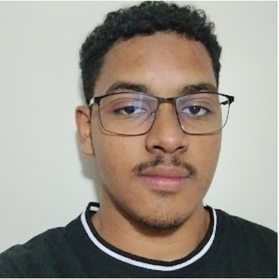

Sobre mim

Olá! Eu me chamo Diogo Rodrigues, sou uma pessoa bastante curiosa e estou sempre procurando por algum passa tempo ou desafio novo, e atualmente estou focando em desenvolvimento para a web, principalmente com HTML, CSS e JavaScript., Acredito que são habilidades essencial para quem quer se tornar um programador FullStack.
Comecei minha jornada com programação em 2023 e desde então venho aprendendo e aplicando conhecimentos em projetos diversos, sempre focado em soluções criativas.
Gosto de explorar novas tecnologias e compartilhar meu aprendizado através de conversas com meus amigos e claro por repositórios no GitHub, mas admito que já faz um tempo que eu não atualizo meus perfis das redes sociais.
Formação
Atualmente sou estudante do curso de Sistemas de Informação pela Ufpe e acabo de concluir meu 3° Período, porém já conclui o Curso Técnico Integrado de Edificações pelo IFPE no período de 2024.2!
Cursos
Já conclui alguns cursos durante os recessos dos períodos que passaram, alguns que eu considero interessante estão presentes no "freecodecamp":
Responsive Web Design;
JavaScript Algorithms and Data Structures;
College Algebra with Python;
Tenho Experiencias com as seguintes habilidades;
HTML5, CSS3, JavaScript, Python, R, Git e GitHub, Figma, Canva e Notion
E claro, estou sempre buscando aprender mais e mais, e possuo certas experiencias do ramo de edificações e o pacote office, mas isso fica para depois!!!